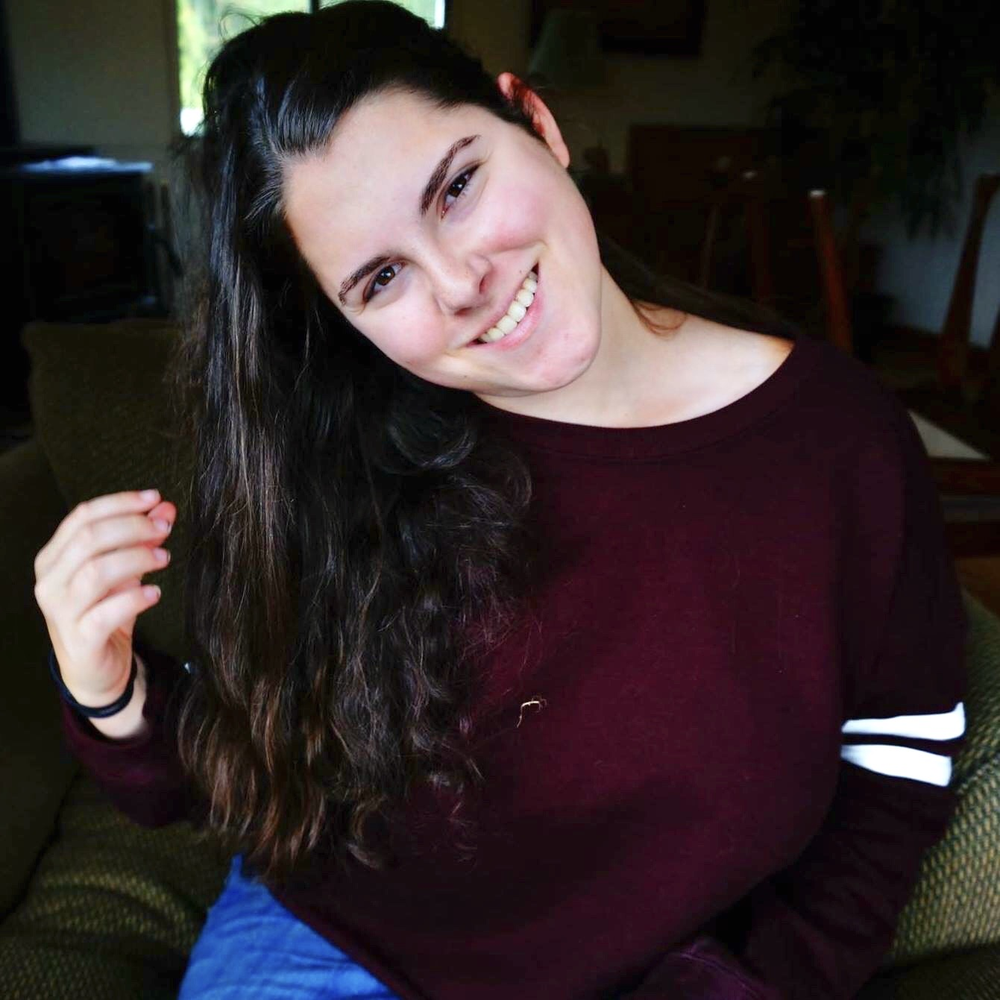

Caden's CST251 Website
I’m from Oregon originally, but have been in the Bay Area since 2013.
I'm a Communications Design Major with a focus in visual design. This is my first quarter at CSUMB, I transferred after two years of college in Washington.
I’m a photographer, so if you need any portraits taken you are welcome to ask. I also enjoy taking photos of wildlife and seascapes in my freetime.